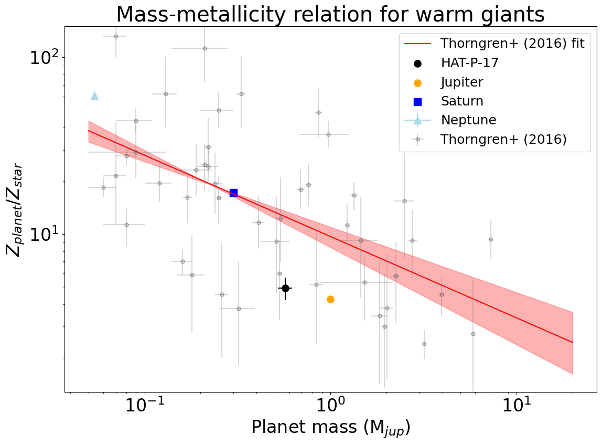
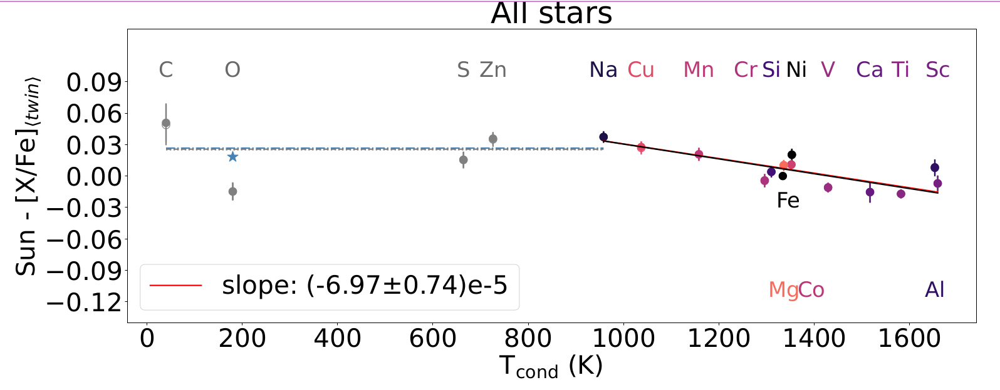
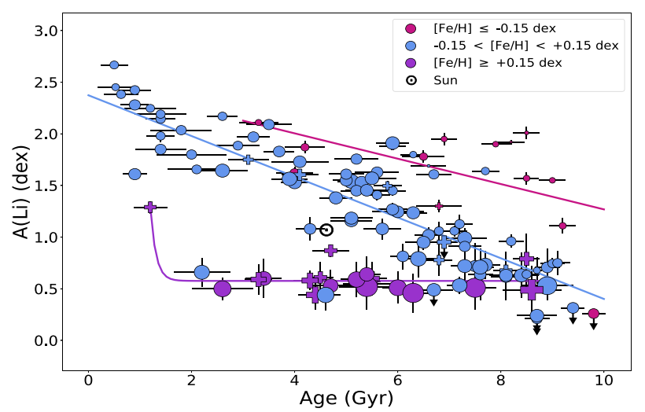
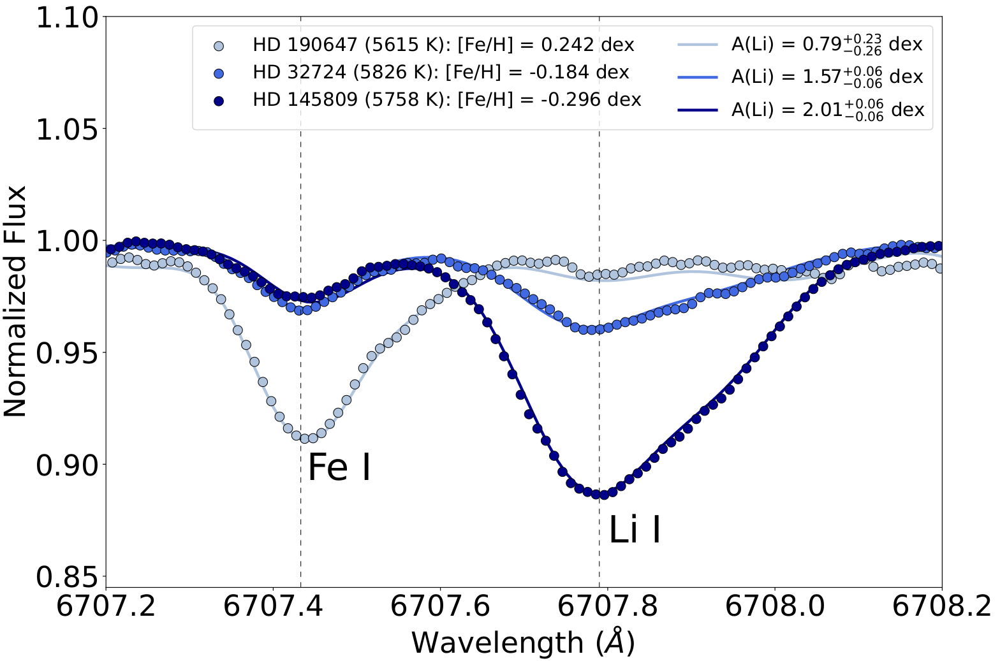

About Me
I am currently a PhD student at the Atmospheric Physics of Exoplanets Department (APEx), at the Max Planck Institute for Astronomy, under supervision of Prof. Dr. Laura Kreidberg.
We are characterizing warm giant planets, in particular their bulk composition.
Education:
- PhD in Astronomy (2025 - now). Max Planck Institute for Astronomy, Germany. Supervisor: Prof. Dr. Laura Kreidberg.
- MSc in Astronomy (2022-2025). University of São Paulo, Brazil. Supervisor: Prof. Dr. Jorge Meléndez.
- Msc Internship (2024). Observatory of Padova, Italy. Supervisors: Dr. Lorenzo Spina and Dr. Sara Lucatello.
- Bachelor in Astronomy (2018-2022). University of São Paulo, Brazil. Supervisor: Prof. Dr. Jorge Meléndez.
- Undergrad internship (2020). Space Telescope Science Institute, USA. Supervisor: Dr. Néstor Espinoza.
Research Interests:
I am interested in the characterization of exoplanets, more specifically of warm giants, and how their mass and bulk metallicity are related to different formation mechanisms and stellar type.
I am also interested in the chemical composition of solar type stars and the effect of the presence of planets on their chemical abundances.
Publications:
You can check out my publications in this link.
Research
The mass-bulk metallicity relation for gas giant planets (in progress)
Giulia Martos and Laura Kreiberg
Bulk metallicity is a fundamental property of gas giant exoplanets, key to constraining models of planetary formation and evolution.
Metal enrichment can be inferred based on mass and radius measurements alone, thanks to the higher densities expected for more metal-rich compositions.
Several previous studies of warm giants found a relationship between bulk metallicity and planet mass, consistent with the core accretion model for
planet formation. However, these results are based on an inhomogeneous data set with a range of assumptions about the stellar (and thus planetary) parameters.
In this work, we revisit the mass-bulk metallicity trend, with a larger sample of planets and improved precision and accuracy for the stellar masses and radii.
We combine SED fitting, GAIA DR3 parallaxes, and uniform modeling of the transits and radial velocity measurements using archival data. With updated planet masses
and radii, we use the interior structure code GASTLI to infer the metal enrichment of the planets. These precise and robust measurements of metal enrichment for will enable:
(1) quantitative tests of predictions from planet formation models, (2) investigation of trends in metal enrichment with system parameters like stellar type and planet multiplicity, and
(3) a benchmark for comparison with upcoming atmospheric metallicity measurements for warm giants from JWST.

This figure shows our first result for the system HAT-P-17, compared to the Solar System giants and the sample of Thorngren et al. (2016).
Signatures of planets and Galactic subpopulations in solar analogs
Giulia Martos, Jorge Meléndez, Lorenzo Spina, and Sara Lucatello
Precise chemical abundances are key for the characterization of planet hosts, since the formation and the presence of planets around the stars can alter their chemical composition, leaving
chemical fingerprints that can be revealed via detailed analyses of the spectrum. In this work, we obtained precise atmospheric parameters and chemical abundances automatically using neural networks for 99 solar twins and
solar analogs to find signatures of exoplanets, as well as to assess how peculiar the Sun is compared to these stars and to analyze any possible fine structures in the Galactic thin disk.
The results we obtained are in line with the literature, with average differences and standard deviations of (2 ± 27) K for Teff , (0.00 ± 0.06) dex for log g, (0.00 ± 0.02) dex for [Fe/H], (−0.01 ± 0.05) km s−1 for
microturbulence velocity (vt ), (0.02 ± 0.08) km s−1 for the macro turbulence velocity (vmacro), and (−0.12 ± 0.26) km s−1 for the projected rotational velocity (vsini). Regarding the chemical abundances,
most of the elements agree with the literature within 0.01 - 0.02 dex. We found that the Sun is more depleted in refractory elements compared to volatiles than 89% of the studied solar analogs,
with a significance of 9.5σ when compared to the stars without detected exoplanets. We also found the possible presence of three subpopulations in the solar analogs: one Cu-rich, one Cu-poor,
and the last one being slightly older and poor in Na.

The Sun is depleted in refractory elements in relation to volatiles when compared to the average of 99 solar analogs.
Metallicity and age effects on lithium depletion in solar analogs
Giulia Martos, Jorge Meléndez, Anne Rathsam and Gabriela Carvalho-Silva
Lithium is a fragile element, that is destroyed at relatively low temperatures in the interior of stars.
The lithium present in the photospheres of solar-type stars is transported to the inner parts by convection, reaching regions even somewhat below the convection zone, by non-standard
transport mechanisms. In stars with deeper convective zones, this element can reach regions with temperatures sufficient enough to be destroyed, implying in a lower Li content. In this work,
we intended to verify the prediction that more metallic stars are depleted in lithium, due to the deepening of their convective zones. We also investigated the impact of planets lithium. We
found robust anticorrelations between lithium abundance and both metallicity and age, with a significance above 10σ in both cases. Our results agree qualitatively with theoretical predictions
and are useful to constrain non-standard models of Li depletion, and to better understand transport and mixing mechanisms inside stars.

Lithium abundance decreases with both age and [Fe/H] for solar analogs.

Spectrum of three solar analogs with similar temperatures and ages, showing that the more metallic star has lower lithium abundance.
Contact
Email: gimartos@mpia.de
Address: Königstuhl 17, Heidelberg, Germany. Office 233.